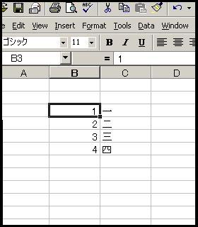

Felix Manual
6.2 Translation Mode
Section contents:
6.2.1 Getting Started
6.2.2 Look up a Cell
6.2.3 Navigate through the Matches
6.2.4 Register a Translation
6.2.5 Look up the Next Cell
6.2.6 Get a Translation from Memory
6.2.7 Auto Translate
6.2.8 Register a Glossary
6.2.9 Register a Memory
6.2.1 Getting Started
Translation mode is the normal mode for translating Excel worksheets. This is the mode that you will spend the most time in.
There are a few things to keep in mind when translating in Excel. Firstly, everything is done at the cell level. Even if a cell contains multiple sentences, it’s currently not possible to translate at lower than the cell (or textbox) level. If you have a very long segment of text in a cell/textbox, you might want to consider copying and pasting that text into Word and translating it there.
Secondly, in order for edits you’ve made to cell to take effect, you first have to navigate out of that cell. So after you’ve translated a cell, first press Enter or Tab to go to a different cell, then go back to the translated cell, and press Alt + ↑ or the equivalent toolbar button/menu command to add that translation.
6.2.2 Look up a Cell
Select the cell you wish to look up. Then from the Felix
menu, select Lookup, or press Alt + L.
Note that unlike Word, formatting information is not preserved for Excel queries.
If a text box is selected, then the contents of the text box will be looked up.
| Toolbar button |  |
| Menu command | Lookup |
| Keyboard shortcut | Alt + L |
6.2.3 Navigate through the Matches
Sometimes when you look up a sentence in your memory, Felix will have more than one suggestion.
The number of suggestions, and the number of the current suggestion, will be shown at the bottom right of the suggestion:

In this example, the first of three suggestions (1/2) is being shown.
To view the next suggestion, click on Next in the Memory window, or from Excel, select Felix >> Next Translation (or press Alt + N).
Tip: The score for the next translation (in this example 68%) is shown next to the Next link.
To view the previous suggestion, click on Prev in the Memory window, or from Excel, select Felix >> Prev Translation (or press Alt + P).
Tip: The score for the previous translation (in this example 68%) is shown next to the Prev link.
Matches will cycle: If you press Next while on the last suggestion, the first suggestion will be shown; likewise, pressing Prev while on the first suggestion will show the last suggestion.
6.2.4 Register a Translation
- After you've typed your translation, you must navigate to another cell (e.g. by pressing the Enter key), and then navigate back to the cell you wish to register (this is because what you type isn't finalized until the cell loses focus).
- From the Felix menu,
select Set (or press
Alt + ↑).
Alternatively, you can select Set and Next (or pressAlt + S); this will register the current cell, and look up the next one (scanning left-to-right, top-to-bottom until a cell with text is found or a maximum number of cells has been searched).
Register translation and look up next cell
| Toolbar button |

|
| Menu command | Set And Next |
| Keyboard shortcut | Alt + S |
Register the current cell as the translation
| Toolbar button | 
|
| Menu command | Set |
| Keyboard shortcut | Alt + ↑ |
6.2.5 Look up the Next Cell
From the Felix menu, select
Select Next Sentence, or press ALT + →.
| Toolbar button |  |
| Menu command | Lookup Next |
| Keyboard shortcut | ALT + → |
6.2.6 Get a Translation from Memory
- Select the cell into which you wish to retrieve the current suggestion from Felix.
- From the Felix menu, select
Get Trans (or press
Alt + ↓).
Alternatively, you can select Get and Next (or pressAlt + G); this will retrieve the current translation, and look up the next one (scanning left-to-right, top-to-bottom until a cell with text is found or a maximum number of cells has been searched).
Get the translation, and look up the next cell
| Toolbar button |  |
| Menu command | Get And Next |
| Keyboard shortcut | Alt + G |
Get the translation
| Toolbar button |  |
| Menu command | Get |
| Keyboard shortcut | Alt + ↓ |
6.2.7 Auto Translate
Sometimes, such as when translating a table or a list, you just know that most of the items are going to have 100% matches in your translation memory, and manually going through and checking each cell would be too tedious. If so, then you can use the Auto Translate function to look up every cell in the current selection, and automatically replace cells having a 100% match in the memory with their translations.
To use this function, select the range of text you wish to auto translate, then select Felix >> Auto Translate…:
- Selection
- The current selection
- Sheet
- The current worksheet
- All Workbooks
- All open workbooks
Tip: If you hold down the Shift key while selecting one of the commands above, all cells that are not translated (because there was no 100% match) will be given a different background color. When you later translate those cells, the original background color will be restored. This lets you quickly spot and translate all the cells that were not translated by this function.
6.2.8 Register a Glossary
- Create a glossary in Excel consisting of two columns, with an optional
third one; the first column containing the source segments, the second column
containing the translation segments, and the third (optional) column
containing context strings.
Tip: There can be other columns, and the columns do not have to be in any particular location. For instance, the sources might be located in column B, the translations in column C, and the contexts in column D, with other information in columns A and E. That doesn't matter, as long as the two columns described here are present. If you do not include context, make sure that the third column is blank.
- Select the upper-left cell of the glossary table.

- From the Felix menu, select Add Glossary.
- The glossary is automatically added to the MAIN Glossary window of Felix.
Tip: If either the source or translation column is empty, then that row is skipped. If three rows in a row are skipped, then Felix assumes that the end of the glossary has been reached, and stops adding entries.
6.2.9 Register a Memory
The procedure for registering a memory is similar to that for registering a glossary, the main difference being the lack of an optional extra column for context.
- Create a memory in Excel consisting of two columns; the first column
containing the sources, and the second column their translations.
Tip: There can be other columns, and the columns do not have to be in any particular location. For instance, the sources might be located in column B, and the translations in column C, with other information in columns A and D. That doesn't matter, as long as the two columns described here are present.
- Select the upper-left cell of the memory table.
- From the Felix menu, select Add Memory.
- The memory is automatically added to the Memory window of Felix.
- Contents
- 1. Overview
- 2. Getting Started
- 3. Using Felix
- 4. The Menus
- 5. Using from Word
- 6. Using from Excel
- 6.1 Getting Started
- 6.2 Translation Mode
- 6.3 Review Mode
- 6.4 Setting Preferences
- 6.5 Translation History
- 7. Using from PowerPoint
- 8. FAQ
- Appendix A. Scripting Felix
- Appendix B. Customizing Felix Templates